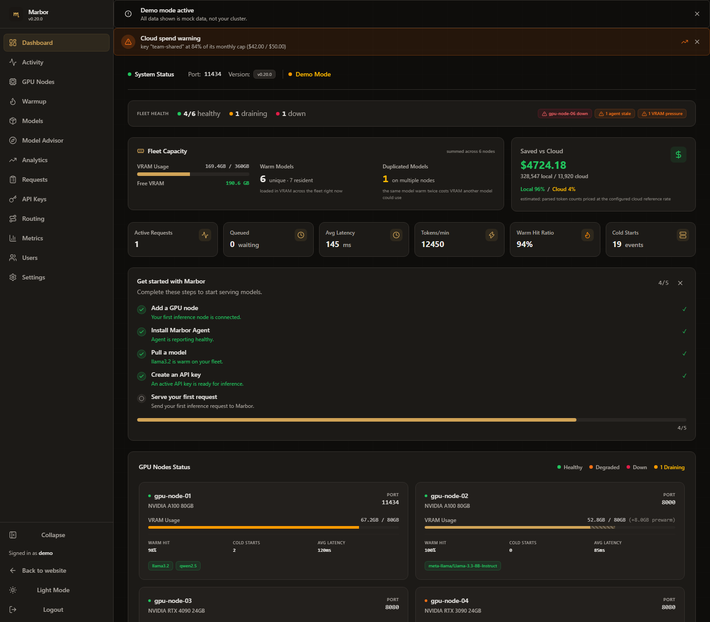

{{VERSION}} · ollama · vllm · tgi · llama.cpp · mlx · apache-2.0 · self-hosted
The intelligent control plane for self-hosted AI inference.
Marbor understands your GPU fleet - models, runtimes, capacity, deployments, and inference state - then places each request where it can be served best. Run Ollama, vLLM, TGI, llama.cpp, and MLX behind one OpenAI-compatible endpoint, with cost-metered cloud overflow that stays off until your hardware is full.
Install is the way in. The live demo is the proof - real dashboard, real telemetry, read-only.
-
a/Inference requestPOST /v1/chat/completions
model: "deepseek-r1:7b"
runtime: ollama stream: true -
b/Marbor evaluates
- model fit
- runtime match
- capacity headroom
- node health
- queue depth
- deployment fit
- inference statewhere supported
-
c/Eligible deploymentsgpu-01healthyollama · deepseek-r1:7bsingle GPU · resident modelgpu-02healthyvllm · llama3.1:8bsingle GPU · resident modelgpu-03standbytgi · idlesingle GPU · cold start ~12sgpu-04unhealthymlx · devstral:24bsingle GPU · excluded from placementFleet VRAM free: 142.4 GB Queued: 0
-
d/Placement decisionplace on gpu-01 · model resident, capacity freeplacement rationale Model resident on gpu-01 with 71.8 GB free, health passing, queue empty, so placement avoids a weight load while the runtime executes inference.
Illustrative trace with demo data. The inference-state signal applies where the runtime exposes locality. marbor decides placement; the runtime executes inference.

On a deployed v0.13.1 instance routing to a single consumer-GPU node (8B Q4_K_M model, ~9.6 GB), cold TTFT was 11.5–18.1 s (median 17.3 s) vs a warm median of 8.1 s and a fastest warm response of 0.4 s - up to 43× faster than the median cold start. Honest context: only ~3.3 GB fit in VRAM so even warm was partly CPU-bound - full-VRAM hardware widens the gap. Reproduce it on your hardware with the open benchmark harness.